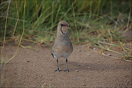
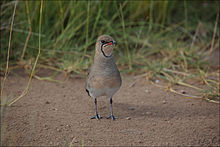

| Collared Pratincole | |
|---|---|
|  | |
| Conservation status | |
| Binomial name | |
| Glareola pratincola Linnaeus, 1766 |
| Collared Pratincole | |
|---|---|
|  | |
| Conservation status | |
| Binomial name | |
| Glareola pratincola Linnaeus, 1766 |
The Collared Pratincole or Common Pratincole (also Greywader), Glareola pratincola, is a wader in the pratincole family, Glareolidae.
Pratincoles are unusual among waders in that they typically hunt their insect prey on the wing like swallows, although they can also feed on the ground.
The Collared Pratincole is a bird of open country, and is often seen near water in the evening, hawking for insects. It is found in the warmer parts of Europe, southwest Asia and Africa. Its 2–4 eggs are laid on the ground. It is migratory, wintering in tropical Africa, and is rare north of the breeding range.
It is 24–28 centimetres (9.4–11 in) long with a 60–70 centimetres (24–28 in) wingspan. It has short legs, long pointed wings, a long forked tail, and a short bill, which is an adaptation to aerial feeding. The back and head are brown, and the wings are brown with darker flight feathers. The belly is white. The underwings are chestnut, but look dark below.
Very good views are needed to distinguish this species from other pratincoles, such as the Black-winged Pratincole and the Oriental Pratincole, which may occur in its range. The latter species also has a chestnut underwing, but is shorter-tailed.
The Collared Pratincole is one of the species to which the Agreement on the Conservation of African-Eurasian Migratory Waterbirds (AEWA) applies.

{kind=link}
{kind=link}